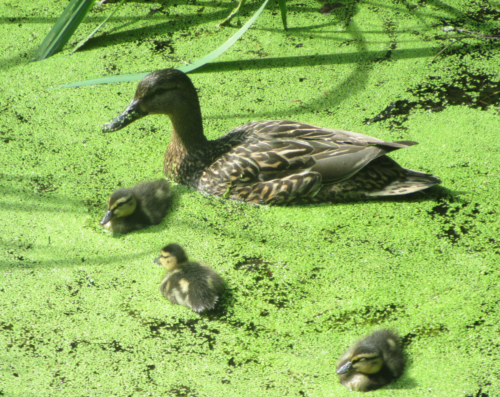
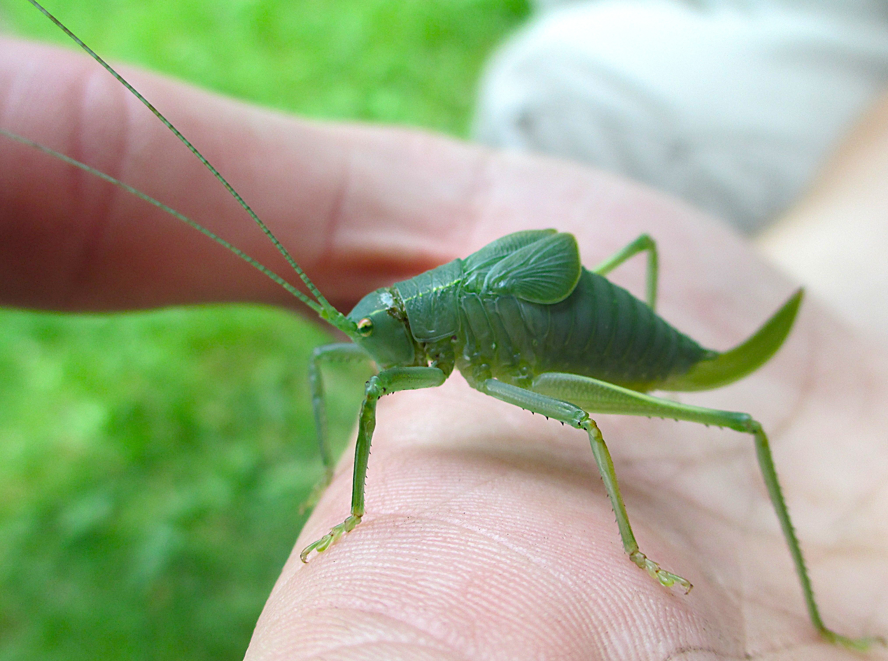
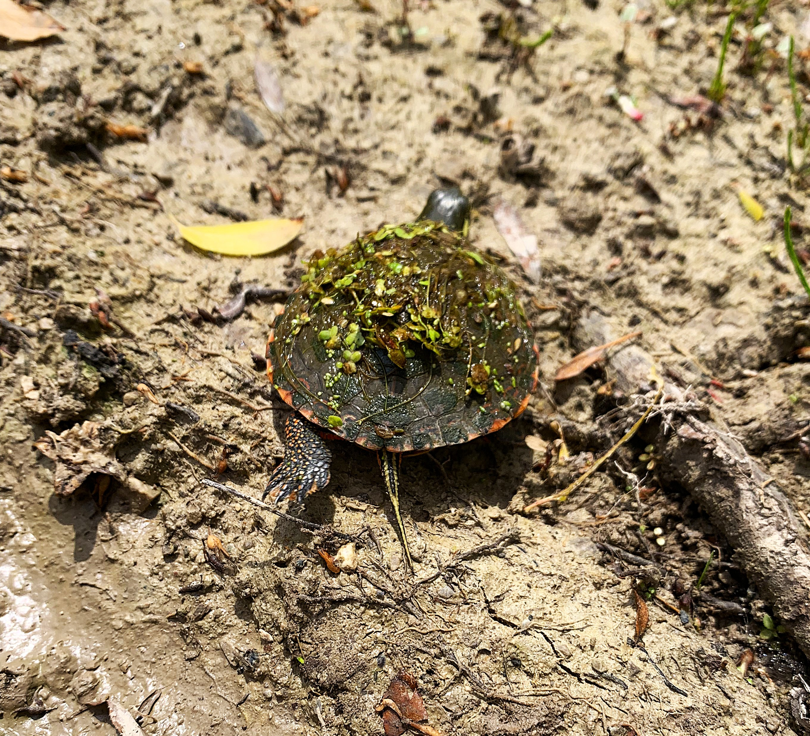
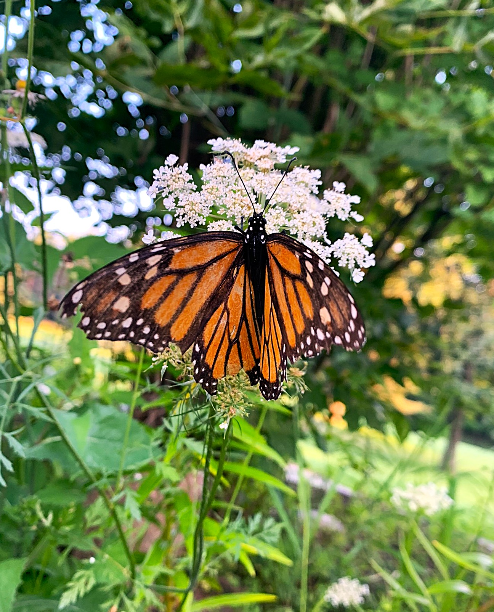
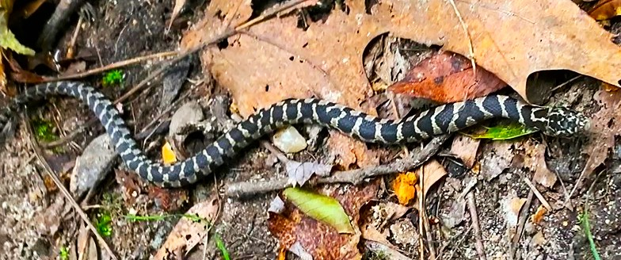
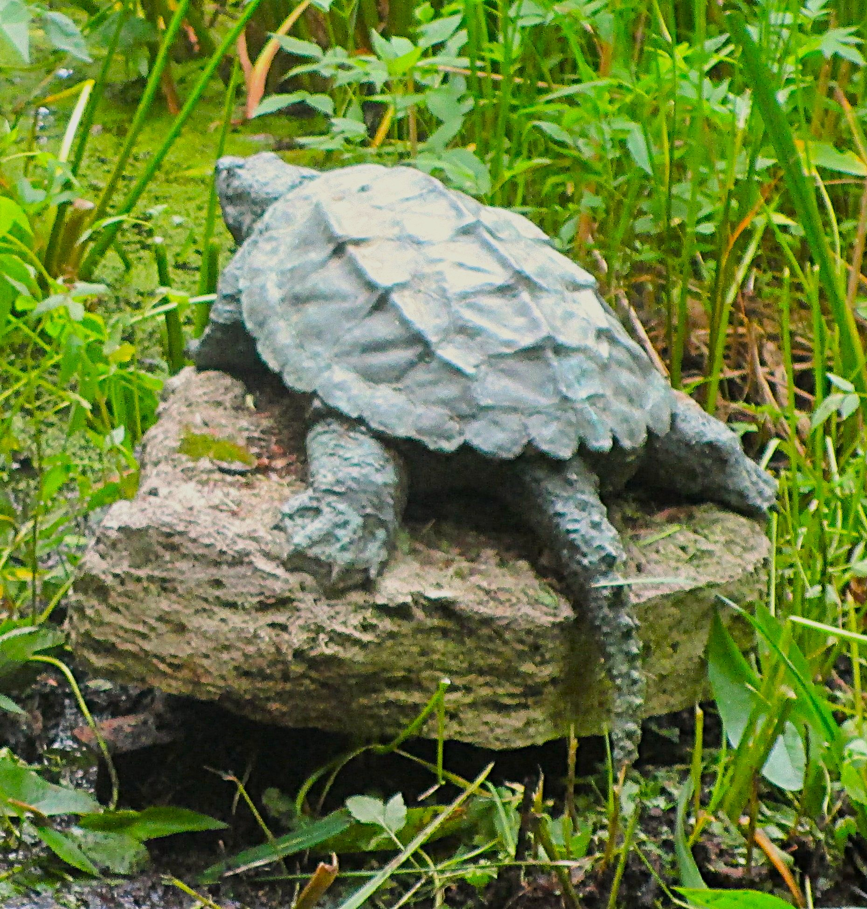

Rather than purely technical documentation, this section is about observation and presence—how light, movement, and habitat shape the way wildlife is experienced in real time.
Photographs documenting wildlife observations across natural and urban environments, highlighting species behavior, habitat use, and ecological relationships.

Juvenile Northern Short-tailed Shrew
Pennsylvania • year

Adult Redhead Duck
Michigan? • year

Adult Eastern Gray Squirrel
Michigan? • year

Adult Female Mallard with Babies
Michigan? • year

Adult Fox Squirrel
Michigan? • year

Juvenile? Katydid
Pennsylvania • year

Baby Painted Turtle
Michigan • year
Barn Swallow Fledglings
Michigan • year

Adult Garter Snake
Michigan • year

Monarch Butterfly
Michigan • year

Monarch Caterpillar
Michigan • year

Monarch Chrysalis
Michigan • year

Juvenile Northern Watersnake
Michigan • year

Robin Fledgling
Michigan • year

Adult Snapping Turtle
Michigan? • year

Adult Wood Frog
Pennsylvania • year
Landscape photography focused on natural systems, seasonal change, and the environments that support wildlife and ecological processes.

Sunrise over Lake Huron
Michigan • year

Forest Trail
Northern Michigan • Fall year

Wetland Preserve
Michigan • Summer year
Close-up observations of ecological patterns, textures, and processes that are often overlooked at larger scales.

Milkweed Seed Dispersal
Native Prairie Habitat

Lichen Community
Forest Ecosystem Detail

Dew-Covered Spider Web
Early Morning Observation
Photography in the field is often less about the subject itself and more about noticing patterns, timing, and behavior.
While photography captures a moment as it appears, artwork provides an opportunity to slow down and study the details more closely. These pieces are inspired by wildlife, landscapes, and natural systems, using a variety of media to explore observation, interpretation, and connection with the natural world.
Wildlife-inspired artwork created across a variety of traditional and mixed media, exploring animal form, behavior, and the natural world through artistic interpretation.

Great Horned Owl
Colored Pencil • year

Woodland Fox
Graphite • year

Great Blue Heron
Watercolor • year
Artistic studies of natural landscapes, habitats, and seasonal environments created through traditional and mixed-media techniques.

Autumn Forest
Acrylic • year

Lakeshore Morning
Watercolor • year

Prairie Study
Colored Pencil • year
Nature-inspired creative work using fiber, textile, and mixed-media techniques that combine artistic expression with observations from wildlife and natural systems.

Songbird Study
Crochet • year

Woodland Fox
Embroidery • year

Wetland Reflections
Mixed Media • year
Photography and artwork serve different purposes, but both begin with careful observation. Whether through a camera lens, sketchbook, paintbrush, or fiber, each medium offers a way to document and interpret the natural world.